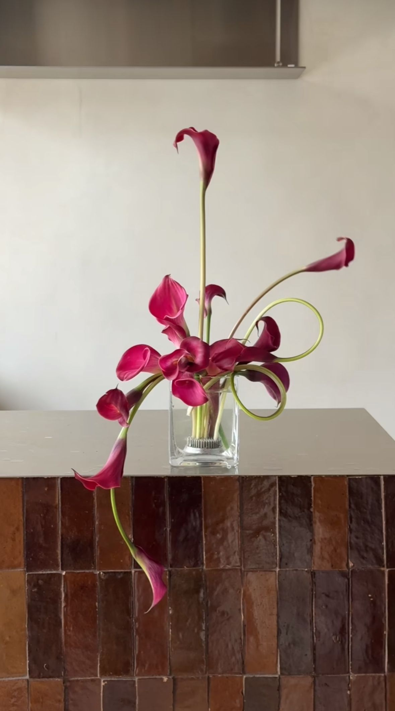
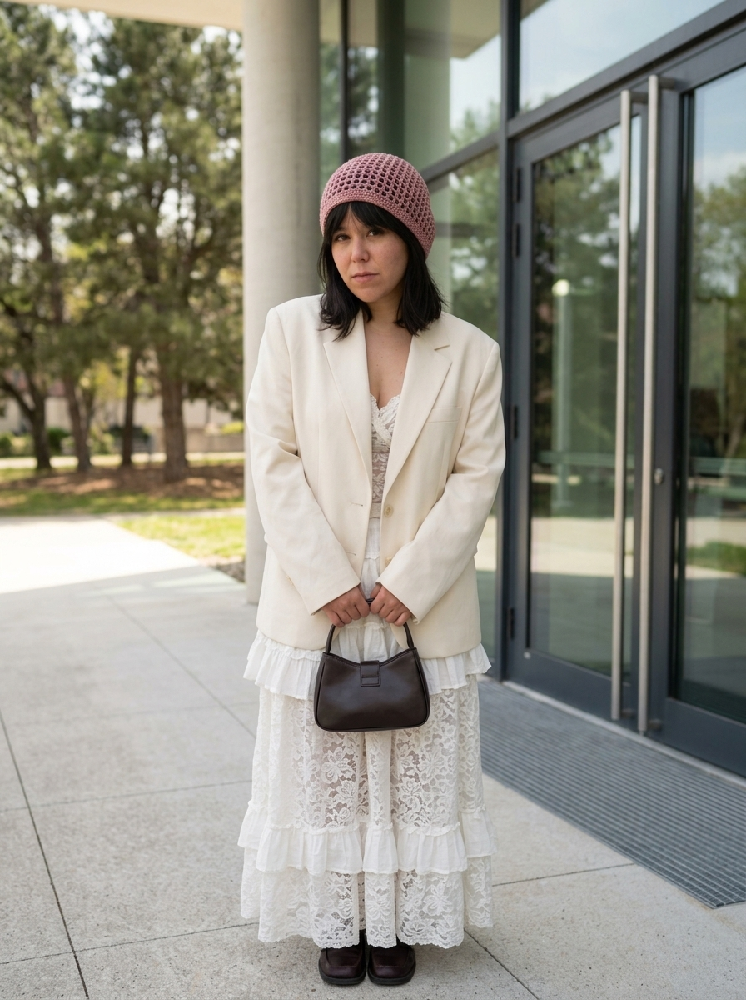

“
Ya no siento estrés y ansiedad al crear contenido, ni tampoco necesidad de subir de forma diaria sin sentido… los días que estuve desaparecida me agendaron clases.[cite: 2]
Cinco semanas de trabajo mano a mano para mujeres creativas, emprendedoras y multifacéticas que buscan integrar sus facetas, alinear todos sus puntos de contacto y construir una marca con profundidad estética y estrategia comercial real.

Muchas veces no te faltan ideas ni talento; lo que falta es una mirada externa con criterio editorial y estratégico que ordene todas tus piezas bajo una misma firma.
Durante estas 5 semanas trabajamos juntas en cada plano de tu ecosistema —tu tesis diferencial, tu comunicación, tu universo visual, tus activos propios y tus propuestas comerciales— para que tu marca hable con claridad y atraiga oportunidades alineadas a todo lo que sos.
Un acompañamiento íntimo, artesanal y estratégico adaptado a tu proyecto real, sin plantillas genéricas ni respuestas enlatadas.
Auditamos el estado actual de tu proyecto, encontramos el concepto central que une tus distintas facetas y definimos tu posicionamiento y narrativa base.
Bajamos tus códigos visuales, verbales y sensoriales para asegurar coherencia en cada espacio donde alguien interactúa con tu firma (redes, web, mails, propuestas).
Ordenamos tus servicios o productos, definimos el valor de cada propuesta y diseñamos el recorrido desde que alguien te descubre hasta que te contrata.
Creamos tus líneas editoriales con personalidad propia y estructuramos una pieza madre de autoridad (manifiesto, dossier o landing) que respalde tu trabajo.
Definimos tus acciones concretas de vinculación, alianzas y ventas para los próximos meses, dejándote un sistema sostenible y claro para ejecutar.
Ya no siento estrés y ansiedad al crear contenido, ni tampoco necesidad de subir de forma diaria sin sentido… los días que estuve desaparecida me agendaron clases.[cite: 2]
Gracias por acompañarme en uno de los procesos más bonitos de mi vida. Ha sido liberador, con muchos “ahá moments”, y sanador. Cada sesión ha sido preciosa, y tu delicadeza y profesionalidad ha sido una caricia para mi alma emprendedora. Gracias por la paciencia, el sostén y la comprensión tan sutil que tienes. Te mando un abrazo grande desde España, ¡esto es sólo el comienzo![cite: 3]
¡Ay, Ferni! Te escribo rapidito para decirte que estoy súper feliz de haber renovado para esta nueva etapa juntas. Es que de verdad ¡el cambio fue brutal! Pasé de no saber cómo vender mi propuesta a agotar todos los cupos en el primer lanzamiento que armamos. La gente me escribe diciendo lo increíble que se ve todo. Tener tu guía para lo que se viene me da una paz gigante. ¡Súper lista para seguir rompiéndola juntas! Un abrazo enorme.[cite: 4]
Qué valioso es habitar espacios que te recuerdan que eso que sueñas, eso que deseas y visualizas para tu vida, realmente es posible para ti. Agradecida por acompañarme hace más de 2 años en espacios que no solo impulsan tu negocio, sino que también nutren el alma, la espiritualidad y la creatividad. Gracias por ser fiel a tu esencia, por compartir tu arte y por ayudarme a encontrar mi propia voz, mis talentos y mi manera de liderar desde la conciencia, la autenticidad y el corazón.[cite: 5]
Un proceso mano a mano para ordenar, profundizar y activar tu marca personal en todos sus puntos de contacto.
Hacés clic en cualquiera de los botones o completás el formulario de abajo y me contás brevemente sobre tu proyecto.
Confirmamos disponibilidad, elegimos el día y horario fijo de nuestros 5 encuentros semanales y formalizamos tu reserva.
Te envío el cuestionario previo de diagnóstico para preparar nuestra primera sesión y arrancamos juntas.

Acompaño a mujeres emprendedoras, creativas y profesionales multifacéticas a desarrollar marcas personales con profundidad, criterio estético y dirección comercial.
Mi enfoque une arquitectura de marca, narrativa editorial y estrategia de negocio para que tu proyecto deje de sentirse disperso y se sostenga sobre una identidad propia coherente en cada punto de contacto.
No trabajo con fórmulas estándar: miro tu historia, tus facetas y tus objetivos reales para diseñar junto a vos una marca que te represente con orgullo y atraiga oportunidades alineadas.
Completá estos datos y se abrirá nuestro chat de WhatsApp con tu mensaje listo para coordinar tu lugar.
Al trabajar 1:1 con cupos reducidos por mes, coordinamos el inicio de manera personalizada apenas confirmás tu lugar por WhatsApp, adaptando los horarios a tu agenda y zona horaria.
El foco de la consultoría es estratégico, conceptual y de dirección creativa: trabajamos tu tesis, narrativa, arquitectura de marca, lineamientos estéticos, estructura de activos y estrategia comercial. Si luego necesitás bajar eso a diseño visual o desarrollo web, lo podemos cotizar aparte o dejarte todo el brief listo para ejecutar.
Podés abonar en 1 pago de USD 699 o en 2 cuotas (al iniciar y a mitad del proceso) mediante transferencia bancaria en Uruguay, PayPal o tarjeta internacional. Al escribirme por WhatsApp te paso los datos según tu país.